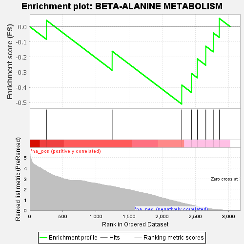
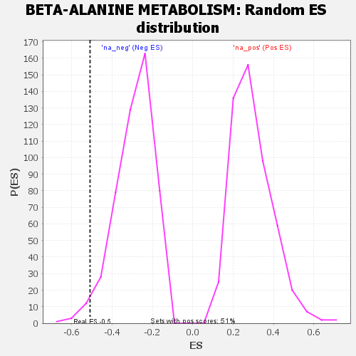

| | | Dataset | GSEA RNK clr Maaslin2 MucosalvsLuminal KO - Cecum.rnk |
| Phenotype | NoPhenotypeAvailable |
| Upregulated in class | na_neg |
| GeneSet | BETA-ALANINE METABOLISM |
| Enrichment Score (ES) | -0.5099602 |
| Normalized Enrichment Score (NES) | -1.7522043 |
| Nominal p-value | 0.024242423 |
| FDR q-value | 0.056644853 |
| FWER p-Value | 0.664 |
Table: GSEA Results Summary

Fig 1: Enrichment plot: BETA-ALANINE METABOLISM
Profile of the Running ES Score & Positions of GeneSet Members on the Rank Ordered List

Fig 2: BETA-ALANINE METABOLISM: Random ES distribution
Gene set null distribution of ES for BETA-ALANINE METABOLISM